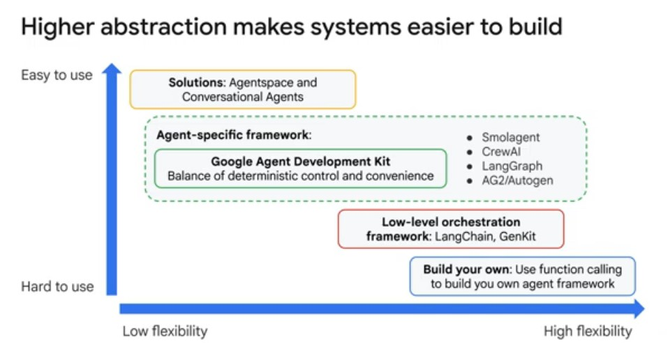
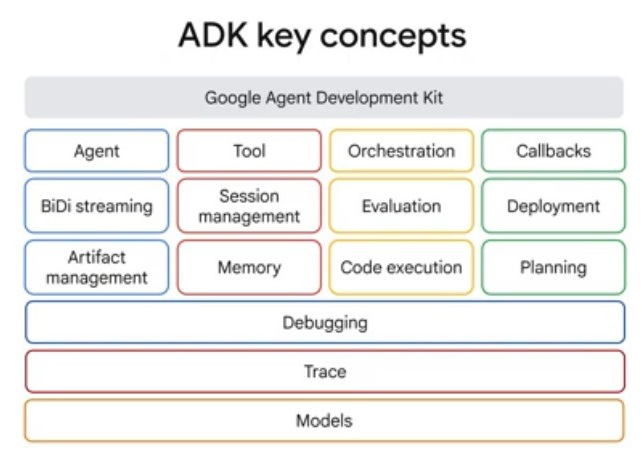
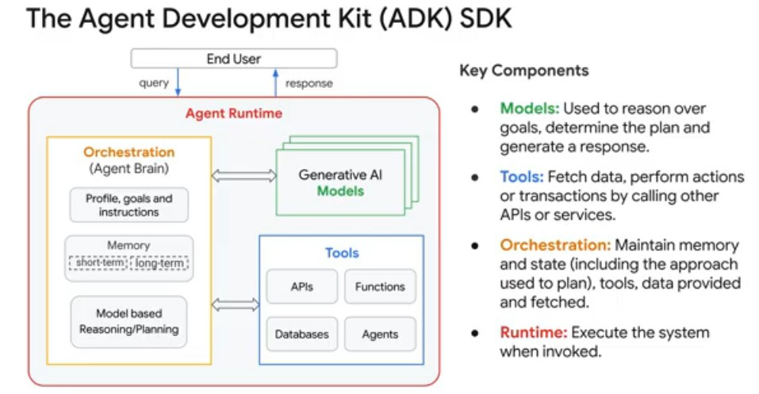
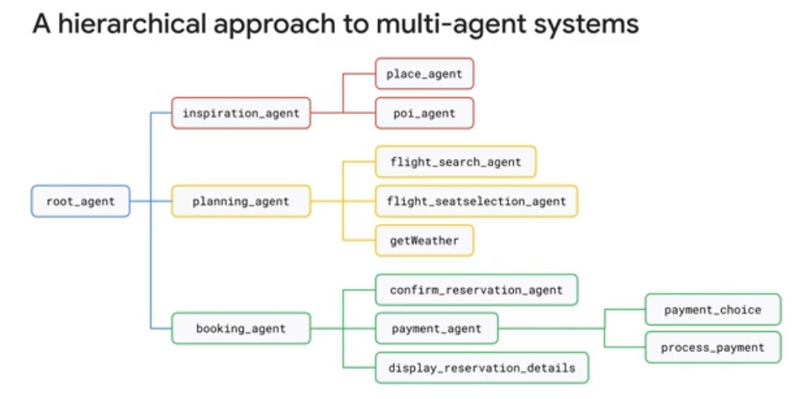
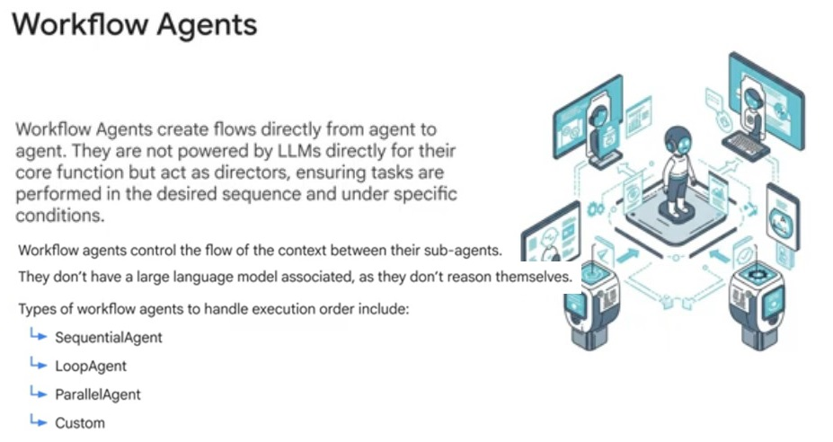
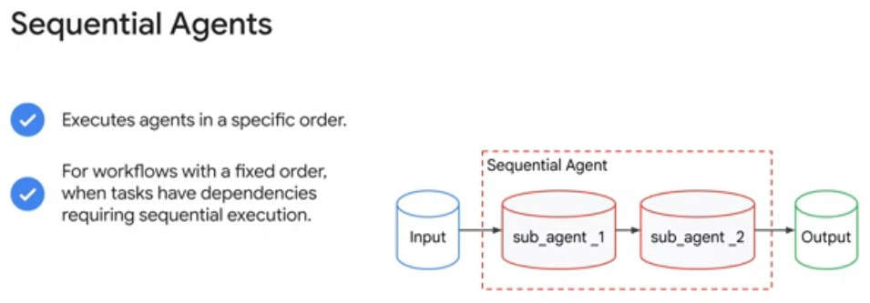
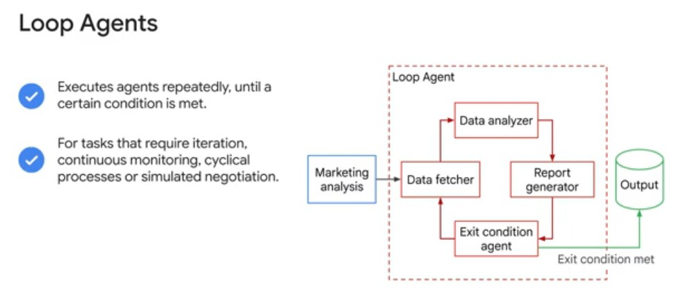
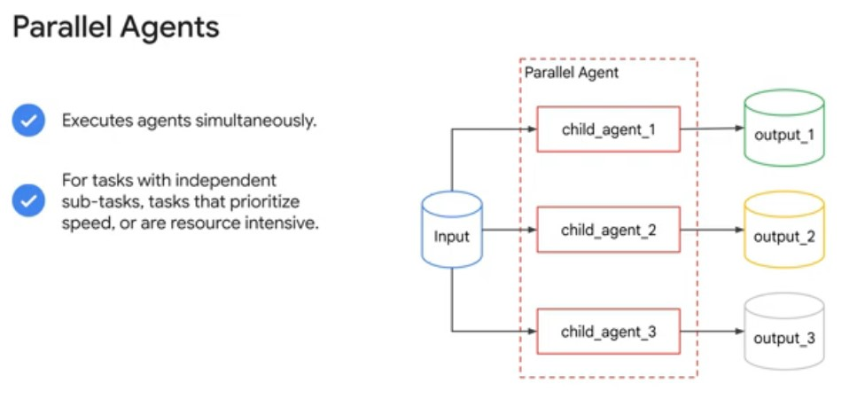
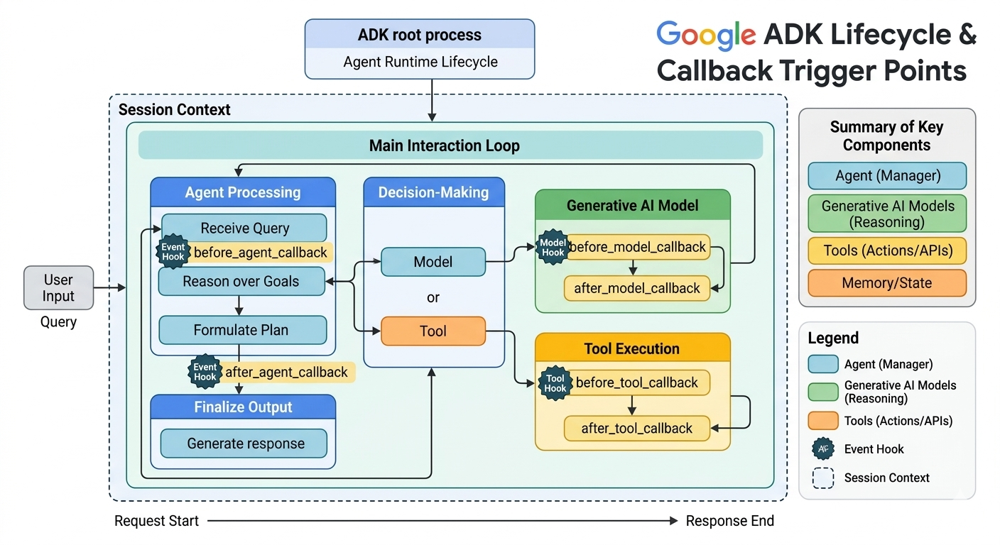

Index
a) Deploy Multi-Agent Systems with Agent Development Kit (ADK) and Agent Engine
a) Deploy and Agent with Agent Development Kit (ADK)
Index: Deploy Multi-Agent Systems with Agent Development Kit (ADK) and Agent Engine
Chapter 1: Course Introduction
- Provide agents with session memory and artifact storage.
- Run agents locally and deploy them to Vertex AI Agent Engine to run as a managed agentic flow with infrastructure decision sand resource scaling handled by Agent Engine.
- With Google Cloud, developers can build agents at their preferred level of abstraction.
- There are a range of methods for agent building that range from highly customizable and flexible, which require more effort for configuration and implementation, to very easy to use out-of-the-box solutions that offer very little customization and fine-tuning possibilities.

a) Through the Customer Engagement Suite (with Conversational Agents): external-facing conversational agents that can integrate with human support teams and existing telephony and communication platforms.
b) Using Agentspace: internal search to accelerate knowledge exchange throughout your organization, across your drives, chat, mail, ticketing platforms, databases, and more, including AI assistant support.
c) Building agents using open source frameworks or from scratch with Agent Engine: use basic building blocks and start building from the ground up, for example with the Google Gen AI SDK or LangChain, where you will also need to make decisions about infrastructure and hosting.
d) Using the Agent Development Kit with Agent Engine: custom development with support for communication between agents through conversation history and shared state.
- Google ADK:
a) local development user interface, with tools to help debug your agents and multi-agent systems.
b) callbacks that can be used to invoke functions during various stages of a flow.
c) session memory for stateful conversations, which enables agents to recall information about a user across multiple sessions, providing long-term context (in addition to short-term session State).
d) integrates artifact storage to facilitate agent collaboration on documents.

Core Framework Components:
- Agent: The central entity that perceives, reasons, and acts to achieve specific user goals.
- BiDi streaming: Enables bidirectional, real-time data flow, allowing the agent and user to communicate continuously without waiting for full turn completion (Gemini Live API, needs to be enabled with configuration).
- Artifact management: Tracks and versions the various files (images, documents, other binary data), datasets, and outputs created or used by the agent throughout its lifecycle.
- Tool: Specific functions or APIs that the agent can call to perform actions outside its native knowledge, such as querying databases or interacting with external services and APIs.
- Session management: Maintains the state, history, and context of a conversation to ensure continuity across multiple interactions. Session Management for session and state handles the context of a single conversation (the Session), including its history (as Events) and the agent's working memory for that conversation (the State). An Event is the basic unit of communication representing things that happen during a session (such as user message, agent reply, and tool use), forming the conversation history.
- Memory: Stores information, user preferences, and past experiences that the agent retrieves to personalize and improve future performance.
- Orchestration: Manages the complex flow of logic, task sequencing, and decision-making required to coordinate various agent components. As part of this orchestration Google ADK uses a Runner, which is the engine that manages the execution flow, orchestrates agent interactions based on Events, and coordinates with backend services.
- Evaluation: Provides metrics and testing frameworks to assess the agent's accuracy, reliability, and overall performance.
- Code execution: Allows the agent to run code snippets in a sandbox environment to perform calculations, analyze data, or generate dynamic results.
- Callbacks: Defined hooks that execute specific logic in response to system events or state changes during the agent's operation.
- Deployment: The process of packaging and exposing the finished agent to a production environment for user interaction. Google ADK deploys to Agent Engine, a fully managed Google Cloud service enabling developers to deploy, manage, and scale AI agents in production. Agent Engine handles the infrastructure to scale agents in production.
- Planning: The agent's ability to decompose complex tasks into smaller, logical steps and sequence them to achieve a final goal.
Foundation & Support Layers:
- Debugging: Integrated tools and logs used to inspect the agent's internal state to identify and resolve logic or execution errors.
- Trace: Records a granular, step-by-step history of the agent's execution path, making it easier to audit and troubleshoot complex processes.
- Models: The underlying large language models (LLMs) that provide the reasoning, natural language understanding, and generation capabilities for the agent.
- Below is the architecture of the Agent Runtime, which is the operational heart of the Agent Development Kit (ADK) that powers how an AI agent interacts with an end user. Essentially, when a user sends a query, the Orchestration layer uses its Memory and instructions to plan the task. It then calls upon the Generative AI Models to reason through that plan and uses Tools to fetch necessary external information, all within the Agent Runtime to provide a coherent response back to the user.

For more information about ADK, check out these resources:
- ADK documentation Agent Development Kit
-
adk-docsGitHub repository adk-docs - How to secure your AI Agents: A Technical Deep-dive
- Build a multimodal, multi-agent with ADK in 37 lines of code
- In this lab environment, the Agent Platform API and Telemetry API have been enabled for you. In your own projects, you will want to enable them in order to query models and send telemetry data to Cloud Logging.
- Lab Instructions copied over from lesson:
Overview
Building complex agentic applications often requires coordinating multiple specialized models, managing tool integrations, and debugging execution traces—all of which can be manually intensive and difficult to scale.
Agent Development Kit (ADK) solves these challenges by providing a modular framework to build, test, and deploy multi-agent systems. It allows you to compose specialized agents into a hierarchy, equip them with pre-built or custom tools, and orchestrate workflows using both predictable pipelines and dynamic LLM-driven routing.
In this lab, you use ADK to build a research assistant that leverages
model_name
Objectives
In this lab, you learn how to perform the following tasks:
- Describe ADK architecture (agents, tools, and sessions).
- Configure a local development environment for agentic apps.
- Define agents with dynamic models and custom tool access.
- Execute and inspect agents using the ADK browser UI, Python code, and the CLI chat interface.
Benefits of ADK
ADK offers several key advantages for developers building agentic applications:
- Multi-agent systems: Build modular, scalable applications by composing specialized agents into hierarchical structures.
- Rich tool ecosystem: Equip agents with pre-built tools, custom functions, or integrations from frameworks like LangChain and CrewAI.
- Flexible Orchestration: Define predictable pipelines with workflow agents or use LLMs for adaptive, dynamic routing.
- Integrated Developer Experience: Develop and debug locally with a powerful CLI and an interactive UI to inspect execution step-by-step.
- Built-in Evaluation: Systematically assess performance by evaluating response quality and execution trajectories against test cases.
- Deployment Ready: Easily containerize and scale agents on Agent Runtime, Cloud Run, or custom Docker infrastructure.
While other SDKs allow you to query models, ADK provides a higher-level framework that handles the complex coordination between multiple models for you.
Setup and requirements
Task 1. Install ADK and set up your environment
In this task, you configure the Cloud Shell Editor, initialize your project, and install the Agent Development Kit (ADK) to prepare your environment for building and testing agentic applications.
Enable recommended APIs
In this lab environment, the Agent Platform API and Telemetry API have been enabled for you. In your own projects, you will want to enable them in order to query models and send telemetry data to Cloud Logging.
Prepare a Cloud Shell Editor tab
-
Click Activate Cloud Shell ( ) in the Google Cloud console title bar.
Note: Alternatively, select the console browser tab and press G then S to open the Cloud Shell terminal. -
Click Continue.
-
When prompted to authorize Cloud Shell, click Authorize.
-
In the Cloud Shell Terminal action bar, click Open in new window .
-
Click Open Editor ( ) on the Cloud Shell Editor action bar, to view files.
-
Click Explorer ( ) in the left pane to open your file explorer.
-
Click Open Folder.
-
In the Open Folder dialog that opens, click OK to select your Google Skills student account's home folder.
-
Close any additional tutorial or Gemini panels that appear on the right side of the screen to save more of your window for your code editor.
For the rest of this lab, you work in this window as your IDE with the Cloud Shell Editor and Cloud Shell Terminal.
Download and install ADK and code samples for this lab
-
Paste the following command into the Cloud Shell Terminal to copy a project directory with code for this lab from a Cloud Storage bucket:
gcloud storage cp -r gs://{{{project_0.project_id| YOUR_GCP_PROJECT_ID}}}-bucket/* .gcloud storage cp -r gs://YOUR_GCP_PROJECT_ID-bucket/* .
-
Update your
PATHenvironment variable to include your user's local environment and install ADK, including the OpenTelemetry (OTel) plugin for logging & telemetry, and other lab requirements by running the following commands in the Cloud Shell Terminal:export PATH=$PATH:"/home/${USER}/.local/bin" python3 -m pip install google-adk[otel-gcp]==1.30.0 -r adk_project/requirements.txtexport PATH=$PATH:"/home/${USER}/.local/bin" python3 -m pip install google-adk[otel-gcp]==1.30.0 -r adk_project/requirements.txtcontent_copy
Task 2. Review the core concepts and structure of ADK project directories
Explore the core concepts and fundamental building blocks of ADK, including agents, tools, and orchestration patterns, to understand the principles used to design effective and flexible multi-agent systems:
- Agent: Agents are core building blocks designed to accomplish specific tasks. They can be powered by LLMs to reason, plan, and utilize tools to achieve goals, and can even collaborate on complex projects.
- Tools: Tools give agents abilities beyond conversation, letting them interact with external APIs, search information, run code, or call other services.
-
Session Services: Session services handle the context of a single conversation (
Session), including its history (Events) and the agent's working memory for that conversation (State). - Callbacks: Custom code snippets you provide to run at specific points in the agent's process, allowing for checks, logging, or behavior modifications.
- Artifact Management: Artifacts allow agents to save, load, and manage files or binary data (like images or PDFs) associated with a session or user.
- Runner: The engine that manages the execution flow, orchestrates agent interactions based on Events, and coordinates with backend services.
Next, explore the standard layout of an ADK project to see how these concepts are organized in practice:
-
In the Cloud Shell Editor's file explorer pane, click adk_project to open the directory.
-
Notice the four agent directories in adk_project:
adk_utils,app_agent,llm_auditor, andmy_google_search_agent. Each of these directories represents a separate agent. Separating agents into their own directories within a project directory provides organization and allows ADK to understand what agents are present. -
Click my_google_search_agent to explore an agent directory.
Note: Make sure you are in the adk_project/my_google_search_agentdirectory at this point. -
Click init.py to view its contents and notice that the directory also contains an
agent.pyfile. -
Notice that the
init.pyfile contains a single line, which imports from theagent.pyfile. ADK uses this to identify this directory as an agent package:from . import agentfrom . import agent -
Click agent.py to view the code for a simple agent equipped with the Google Search tool.
- The imports from
google.adk: theAgentclass and thegoogle_searchtool from thetoolsmodule. - Read the code comments that describe the parameters that configure this simple agent.
- The imports from
-
To use the imported
google_searchtool, it needs to be passed to the agent. Paste the following line into theagent.pyfile around line 34, where indicated at the end of theAgentobject creation:tools=[google_search]
tools=[google_search]content_copy -
Save the
agent.pyfile.
Tools enable an agent to perform actions beyond generating text. In this case, the google_search tool allows the agent to decide when it would like more
information than it already has from its training data. It can then write a search query, use Google Search to search the web, and then base its response to the user
on the results.
When a model bases its response on additional information that it retrieves, it is called "grounding," and this overall process is known as "retrieval-augmented generation" or "RAG."
Task 3. Run the agent using the ADK Dev UI
ADK includes a development UI designed to run locally to help you develop and test your agents. It can help you visualize what each agent is doing and how multiple agents interact with one another. In this task, you explore this interface.
Note: When you run an agent, ADK needs to know who is requesting the model API calls. You can provide this information in one of two ways:
- Provide a Gemini API key.
- Authenticate your environment with Google Cloud credentials and associate your model API calls with an Agent Platform project and location.
In this lab, you take the Agent Platform approach.
-
In the Cloud Shell Terminal, run the following commands to write an
.envfile to set your environment variables instructing the agent to use your project and the global endpoint:cd ~/adk_project cat << EOF > my_google_search_agent/.env GOOGLE_GENAI_USE_VERTEXAI=TRUE GOOGLE_CLOUD_PROJECT=YOUR_GCP_PROJECT_ID GOOGLE_CLOUD_LOCATION=global MODEL=gemini_flash_model_id OTEL_SERVICE_NAME=adk-agent OTEL_PYTHON_LOGGING_AUTO_INSTRUMENTATION_ENABLED=true OTEL_INSTRUMENTATION_GENAI_CAPTURE_MESSAGE_CONTENT=true EOFcd ~/adk_project cat << EOF > my_google_search_agent/.env GOOGLE_GENAI_USE_VERTEXAI=TRUE GOOGLE_CLOUD_PROJECT={{{project_0.project_id| YOUR_GCP_PROJECT_ID}}} GOOGLE_CLOUD_LOCATION=global MODEL={{{project_0.startup_script.gemini_flash_model_id | gemini_flash_model_id}}} OTEL_SERVICE_NAME=adk-agent OTEL_PYTHON_LOGGING_AUTO_INSTRUMENTATION_ENABLED=true OTEL_INSTRUMENTATION_GENAI_CAPTURE_MESSAGE_CONTENT=true EOFThese variables serve the following roles:
-
GOOGLE_GENAI_USE_VERTEXAI=TRUEindicates that you use Vertex AI for authentication as opposed to Gemini API key authentication. -
GOOGLE_CLOUD_PROJECTandGOOGLE_CLOUD_LOCATIONprovide the project and location with which to associate your model calls. -
MODELis not required, but is stored here so that it can be loaded as another environment variable. This can be a convenient way to try different models in different deployment environments. -
OTEL_SERVICE_NAME,OTEL_PYTHON_LOGGING_AUTO_INSTRUMENTATION_ENABLED, andOTEL_INSTRUMENTATION_GENAI_CAPTURE_MESSAGE_CONTENTare used to configure OpenTelemetry (OTel) for collecting ADK-specific telemetry data from the agent.
The ADK Dev UI and CLI chat interface automatically load configurations from an
.envfile. If no file is present, they use system environment variables with matching names. -
-
In the Cloud Shell Terminal, ensure you are in the adk_project directory where your agent subdirectories are located by running:
cd ~/adk_projectcd ~/adk_project -
Launch the ADK Dev UI with the following command with some useful flags. This command will:
- Launch a Fast API web server with the ADK Dev UI
- Allow the Cloud Shell web preview to query your agent
- Send telemetry data to Cloud Logging
- Reload agents when code changes are detected
adk web \ --allow_origins "regex:https://.*\.cloudshell\.dev" \ --otel_to_cloud \ --reload_agentsadk web \ --allow_origins "regex:https://.*\.cloudshell\.dev" \ --otel_to_cloud \ --reload_agentsOutput
INFO: Started server process [2434] INFO: Waiting for application startup. +-------------------------------------------------------+ | ADK Web Server started | | | | For local testing, access at http://localhost:8000. | +-------------------------------------------------------+ INFO: Application startup complete. INFO: Uvicorn running on http://127.0.0.1:8000 (Press CTRL+C to quit)INFO: Started server process [2434] INFO: Waiting for application startup. +-------------------------------------------------------+ | ADK Web Server started | | | | For local testing, access at http://localhost:8000. | +-------------------------------------------------------+ INFO: Application startup complete. INFO: Uvicorn running on http://127.0.0.1:8000 (Press CTRL+C to quit)
The result is the ADK Dev UI URL is displayed, as the DEV UI is currently running.
-
To view the web interface in a new tab, click the http://127.0.0.1:8000 link in the Terminal output, which links you via proxy to this app running locally on your Cloud Shell instance. The result is you see the Dev UI running in a new tab.
-
From the Select an agent menu options on the left, select my_google_search_agent.
-
To prompt the agent to use its Google Search tool, enter the question:
I know the Summer olympics are happening in 2028, please tell me which countries are participating and what events will be held.I know the Summer olympics are happening in 2028, please tell me which countries are participating and what events will be held.Notice the agent uses Google Search to retrieve real-time information, bypassing the knowledge cutoff of its pre-trained model.
Note: A response using grounding with Google search includes ready-to-display HTML "Search Suggestions" like those you see at the bottom of the agent's response. When you use grounding with Google Search, you are required to display these suggestions, which help users follow up on the information the model used for its response. -
Notice that in the left pane, you are in the Trace tab by default. Click on your last query text (
I know the Summer olympics are happening in 2028, please tell me which countries are participating and what events will be held.) to see a trace of how long different parts of your query took to execute.You can use this to debug more complex executions involving tool calls to understand how various processes contribute to the latency of your responses.
-
Return to the chat discussion section of the window, and click the agent icon ( ) next to the agent's response in the right pane to inspect the event returned by the agent. This event includes the
contentreturned to the user andgroundingMetadatadetailing the search results that the response was based on. -
When you are finished exploring the ADK Dev UI, close this browser tab.
-
Return to your browser tab with the Cloud Shell Terminal and click in the terminal's pane.
-
Press CTRL+C to stop the web server.
Click Check my progress to verify the objective.
Task 4. Run an agent programmatically
While the ADK Dev UI is great for testing and debugging, it is not suitable for presenting your agent to multiple users in production.
To run an agent as part of a larger application, you need to include a few additional components in your agent.py script that the web app handled for
you in the previous task. Proceed with the following steps to open a script with these components to review them.
-
You can set environment variables for all of your agents to use if they do not have .env files in their directories. In the Cloud Shell Terminal run the following commands to export environment variables:
export GOOGLE_GENAI_USE_VERTEXAI=TRUE export GOOGLE_CLOUD_PROJECT=YOUR_GCP_PROJECT_ID export GOOGLE_CLOUD_LOCATION=global export MODEL=gemini_flash_model_idexport GOOGLE_GENAI_USE_VERTEXAI=TRUE export GOOGLE_CLOUD_PROJECT={{{project_0.project_id| YOUR_GCP_PROJECT_ID}}} export GOOGLE_CLOUD_LOCATION=global export MODEL={{{project_0.startup_script.gemini_flash_model_id | gemini_flash_model_id}}} -
In the Cloud Shell Editor file browser, click adk_project/app_agent.
-
Click the agent.py file in this directory.
-
This agent is designed to run as part of an application. Read the commented code in
agent.py, paying particular attention to the following components in the code:-
InMemoryRunner()(around line 68), an oversight of agent execution feature: The Runner is the code responsible for receiving the user's query, passing it to the appropriate agent, receiving the agent's response event and passing it back to the calling application or UI, and then triggering the following event. You can read more in the ADK documentation about the event loop. -
runner.session_service.create_session()(around line 71), a conversation history and shared state feature. Sessions allow an agent to preserve state, remembering a list of items, the current status of a task, or other 'current' information. This class creates a local session service for simplicity, but in production this could be handled by a database. -
types.Content()andtypes.Part()(around lines 78 and 79), a structured, multimodal messages feature. Instead of a simple string, the agent is passed a Content object which can consist of multiple Parts. This allows for complex messages, including text and multimodal content to be passed to the agent in a specific order.
Note: When you ran the agent in the ADK Dev UI, it created a session service, artifact service, and runner for you. When you write your own agents to deploy programmatically, it is recommended that you provide these components as external services rather than relying on in-memory versions. Notice that the script includes a hardcoded query (around line 93), which asks the agent:
"What is the capital of France?" -
-
Run the following command in the Cloud Shell Terminal to run this agent programmatically:
python3 app_agent/agent.pypython3 app_agent/agent.pySelected Output:
** User says: What is the capital of France? ... ** trivia_agent: The capital of France is Paris.** User says: What is the capital of France? ... ** trivia_agent: The capital of France is Paris.
Add Pydantic schema classes
You can also define specific input and/or output schema for an agent as follows:
-
Around line 28, add the following import statements for the Pydantic schema classes
BaseModelandFieldto define a schema class:from pydantic import BaseModel, Field class CountryCapital(BaseModel): capital: str = Field(description="A country's capital.")from pydantic import BaseModel, Field class CountryCapital(BaseModel): capital: str = Field(description="A country's capital.")content_copy -
In your
root_agent'sAgentdefinition, around line 62, set theoutput_schemaparameter to use theCountryCapitalschema you defined above:output_schema=CountryCapitaloutput_schema=CountryCapitalcontent_copy -
Run the agent script again to see the response following the
output_schema:python3 app_agent/agent.pypython3 app_agent/agent.pySelected Output:
** User says: What is the capital of France? ... ** trivia_agent: {"capital": "Paris"}** User says: What is the capital of France? ... ** trivia_agent: {"capital": "Paris"}
Click Check my progress to verify the objective.
Task 5. Chat with an agent via the command-line interface
You can also chat with an agent in your local development environment by using the command line interface. This can be very handy for quickly debugging and testing agents as you develop them.
Like the web interface, the command line interface also handles the creation of the session service, artifact service, and runner for your agent.
To run an interactive session using the command line interface:
-
Run the following in Cloud Shell Terminal:
adk run my_google_search_agentadk run my_google_search_agentcontent_copy Output:
Log setup complete: /tmp/agents_log/agent.20250322_010300.log To access latest log: tail -F /tmp/agents_log/agent.latest.log Running agent basic_search_agent, type exit to exit. user:Log setup complete: /tmp/agents_log/agent.20250322_010300.log To access latest log: tail -F /tmp/agents_log/agent.latest.log Running agent basic_search_agent, type exit to exit. user:
-
Input the following message:
What are some popular movies that have been released in India this year?What are some popular movies that have been released in India this year?content_copy Example output (yours may be a little different):
[google_search_agent]: Here are some of the movies that have been released in India in the past month (January 2026 to early February 2026): * **January 16, 2026**: *Bihu Attack*, *Happy Patel: Khatarnak Jasoos*. * **January 23, 2026**: *Border 2*. * **January 30, 2026**: *Mardaani 3*, *Mayasabha - The Hall of Illusion*. * **February 5, 2026**: *Vadh 2*, *Haunted 3D: Ghosts Of The Past*. * **February 13, 2026**: *Tu Yaa Main*, *O'Romeo*, *Swayambhu*,. * **February 19, 2026**: *Veer Murarbaji*, *Do Deewane Seher Mein*. * **February 20, 2026**: *Epic: Elvis Presley In Concert*, *Hamnet*. * **February 26, 2026**: *The Kerala Story 2 Goes Beyond*.[google_search_agent]: Here are some of the movies that have been released in India in the past month (January 2026 to early February 2026): * **January 16, 2026**: *Bihu Attack*, *Happy Patel: Khatarnak Jasoos*. * **January 23, 2026**: *Border 2*. * **January 30, 2026**: *Mardaani 3*, *Mayasabha - The Hall of Illusion*. * **February 5, 2026**: *Vadh 2*, *Haunted 3D: Ghosts Of The Past*. * **February 13, 2026**: *Tu Yaa Main*, *O'Romeo*, *Swayambhu*,. * **February 19, 2026**: *Veer Murarbaji*, *Do Deewane Seher Mein*. * **February 20, 2026**: *Epic: Elvis Presley In Concert*, *Hamnet*. * **February 26, 2026**: *The Kerala Story 2 Goes Beyond*.
-
When you are finished chatting with the command line interface, enter exit at the next user prompt to end the chat.
Task 6. Preview a multi-agent example
In this task, you explore a multi-agent system to understand a core ADK capability.
This agentic system evaluates and improves the factual grounding of responses generated by LLMs. It includes:
- a
critic_agentto serve as an automated fact-checker - a
reviser_agentto rewrite responses if needed to correct inaccuracies based on verified findings
To explore this agent:
-
Use the Cloud Shell Editor file explorer to navigate to the directory
adk_project/llm_auditor. -
Within the
llm_auditordirectory, click agent.py. -
Here are a few things to notice about this multi-agent example:
- The
SequentialAgentis a workflow class that passes conversation control between agents sequentially without requiring user input. When executed, thecritic_agentandreviser_agentrespond in order automatically." - These sub-agents are each imported from their own directories within a
sub_agentsdirectory. - Sub-agent directories contain
init.py,agent.pyandprompt.py. Use prompt.py to manage complex prompts independently before importing them into agent.py.
- The
-
Copy the
.envfile you created earlier to be used by this agent as well and launch the ADK Dev UI again by running the following in the Cloud Shell Terminal:cd ~/adk_project cp my_google_search_agent/.env llm_auditor/.env adk web \ --allow_origins "regex:https://.*\.cloudshell\.dev" \ --otel_to_cloud \ --reload_agentscd ~/adk_project cp my_google_search_agent/.env llm_auditor/.env adk web \ --allow_origins "regex:https://.*\.cloudshell\.dev" \ --otel_to_cloud \ --reload_agentscontent_copy Note: If you did not shut down your previous adk websession, the default port of 8000 is blocked, but you can launch the Dev UI with a new port by usingadk web --port 8001, for example. -
Click the http://127.0.0.1:8000 link in the Terminal output. A new browser tab opens with the ADK Dev UI.
-
From the Select an agent menu options on the left, select llm_auditor.
-
Start the conversation with the following false statement:
Double check this: Earth is further away from the Sun than Mars.Double check this: Earth is further away from the Sun than Mars.content_copy
You should see two responses from the agent in the chat area:
- First, a detailed response from the
critic_agentchecking the truthfulness of the statement based on fact-checking with Google Search. - Second, a short revised statement from the
reviser_agentwith a corrected version of your false input statement, for example, "Earth is closer to the Sun than Mars."
- Next to each response, click the agent icon ( ) to open the event panel for that response (or find the corresponding numbered event on the Events panel and select it).
At the top of the event view, there is a graph that visualizes the relationships between the agents and tools in this multi-agent system. The agent responsible for this response is highlighted.
-
Explore the code further or ask for other fact-checking examples in the Dev UI. Another example you can try is:
Q: Why is the sky blue? A: Because the sky reflects the color of the ocean.Q: Why is the sky blue? A: Because the sky reflects the color of the ocean.content_copy -
If you would like to reset the conversation, click New Session on the session title bar to restart the conversation.
-
When you are finished asking questions of this agent, close the browser tab and press CTRL+C in the Terminal to stop the server.
Note: Even though this example uses a SequentialAgent workflow agent, think of this pattern as a human-in-the-loop pattern.
When the SequentialAgent ends its sequence, the conversation goes back to its parent, the llm_auditor in this example, to get a new input
turn from the user and then pass the conversation back around to the other agents.
Click Check my progress to verify the objective.
- This lab covers the use of tools with Agent Development Kit agents. From powerful tools provided by Google, like Google Search and Vertex AI Search, to the rich variety of tools available in the LangChain ecosystem, there are many tools to get started with. Additionally, creating your own tool from a function only requires writing a good docstring!
- After this lab, you will be able to:
a) Provide prebuilt Google or LangChain tools to an agent
b) Discuss the importance of structured docstrings and typing when writing functions for agent tools
c) Write your own tool functions for an agent
Overview
This lab covers the use of tools with Agent Development Kit agents.
From powerful tools provided by Google, like Google Search and Vertex AI Search, to the rich variety of tools available in the LangChain ecosystem, there are many tools to get started with.
Additionally, creating your own tool from a function only requires writing a good docstring!
This lab assumes you are familiar with the basics of ADK covered in the lab Get started with Agent Development Kit (ADK).
Objective
In this lab, you will learn about the ecosystem of tools available to ADK agents. You will also learn how to provide a function to an agent as a custom tool.
After this lab, you will be able to:
- Provide prebuilt Google or LangChain tools to an agent
- Discuss the importance of structured docstrings and typing when writing functions for agent tools
- Write your own tool functions for an agent
Tool use with the Agent Developer Kit
Leveraging tools effectively is what truly distinguishes intelligent agents from basic models. A tool is a block of code, like a function or a method, that executes specific actions such as interacting with databases, making API requests, or invoking other external services.
Tools empower agents to interact with other systems and perform actions beyond their core reasoning and generation capabilities. It's crucial to note that these tools operate independently of the agent's LLM, meaning that tools do not automatically possess their own reasoning abilities.
Agent Development Kit provides developers with a diverse range of tool options:
- Pre-built Tools: Ready-to-use functionalities such as Google Search, Code Execution, and Retrieval-Augmented Generation (RAG) tools.
- Third-Party Tools: Seamless integration of tools from external libraries like LangChain
- Custom Tools: The ability to create custom tools tailored to specific requirements, by using language specific constructs and Agents-as-Tools. The SDK also provides asynchronous capabilities through Long Running Function Tools.
In this lab, you will explore these categories and implement one of each type.
Available Pre-Built Tools from Google
Google provides several useful tools for your agents. They include:
Google Search (google_search): Allows the agent to perform web searches using Google Search. You simply add
google_search
to the agent's tools.
Code Execution (built_in_code_execution): This tool allows the agent to execute code, to perform calculations, data manipulation, or
interact with other systems programmatically. You can use the pre-built VertexCodeInterpreter or any code executor that implements the
BaseCodeExecutor interface.
Retrieval (retrieval): A package of tools designed to fetch information from various sources.
Vertex AI Search Tool (VertexAiSearchTool): This tool integrates with Google Cloud's Vertex AI Search service to allow the agent to
search through your AI Applications data stores.
Task 1. Install ADK and set up your environment
Enable Vertex AI recommended APIs
- In this lab environment, the Vertex AI API has been enabled for you. If you were to follow these steps in your own project, you could enable it by navigating to Vertex AI and following the prompt to enable it.
Prepare a Cloud Shell Editor tab
- With your Google Cloud console window selected, open Cloud Shell by pressing the G key and then the S key on your keyboard. Alternatively, you can click the Activate Cloud Shell button ( ) in the upper right of the Cloud console.
- Click Continue.
- When prompted to authorize Cloud Shell, click Authorize.
- In the upper right corner of the Cloud Shell Terminal panel, click the Open in new window button .
- Click the Open Editor pencil icon ( ) at the top of the pane to view files.
- At the top of the left-hand navigation menu, click the Explorer icon ( ) to open your file explorer.
- Click the Open Folder button.
- In the Open Folder dialog that opens, click OK to select your Qwiklab student account's home folder.
- Close any additional tutorial or Gemini panels that appear on the right side of the screen to save more of your window for your code editor.
- Throughout the rest of this lab, you can work in this window as your IDE with the Cloud Shell Editor and Cloud Shell Terminal.
Download and install ADK and code samples for this lab
-
Paste the following commands into the Cloud Shell Terminal to download code for this lab from a Cloud Storage bucket:
gcloud storage cp -r gs://YOUR_GCP_PROJECT_ID-bucket/adk_tools . -
Update your
PATHenvironment variable, install ADK, and install some additional requirements for this lab by running the following commands in the Cloud Shell Terminal.export PATH=$PATH:"/home/${USER}/.local/bin"
python3 -m pip install -r adk_tools/requirements.txt
Task 2. Create a search app that will be used to ground responses on your own data
In a later task, you will use the Google-provided Vertex AI Search tool to ground responses on your own data in an AI Applications data store. Since the app's data store needs a little while to ingest data, you will set it up now, then use it to ground responses on your data in a later task.
-
In your browser tab still showing the Cloud Console, navigate to AI Applications by searching for it at the top of the console. (Feel free to close any Cloud Shell Terminal or tutorial panels at the bottom or right side of this tab.)
-
Select the terms and conditions checkbox and click Continue and activate the API.
-
From the left-hand navigation menu, select Data Stores.
-
Select Create data store.
-
Find the Cloud Storage card and click Select on it.
-
Under Unstructured Data Import (Document Search & RAG), select Documents.
-
Example documents have been uploaded to Cloud Storage for you. They relate to the fictional discovery of a new planet named Persephone. A fictional planet is used in this case so that the model cannot have learned anything about this planet during its training.
For a GCS path, enter
YOUR_GCP_PROJECT_ID-bucket/planet-search-docs. -
Click Continue.
-
Keep the location set to global.
-
For a data store name, enter: Planet Search.
-
Click Continue.
-
When asked to select the pricing model, keep the default selection and click Create.
-
Click Apps on the left-hand nav.
-
Click Create a new app.
-
Find the card for a Custom search (general) app and click Create.
-
Name the app Planet Search
-
Provide a Company name of Planet Conferences
-
Click Continue.
-
Select the checkbox next to the Planet Search data store.
-
Keep the default pricing terms and select Create.
-
Once your app is created, click AI Applications in the upper left to return to your app dashboard.
-
Copy the ID value of your app displayed in the Apps table. Save it in a text document as you will need it later.
For now, you will give the data store some time to ingest its data. Later you will provide your search app to an agent to ground its responses.
Task 3. Use a Third-Party Tool from the LangChain Community
ADK allows you to use tools available from third-party AI frameworks like LangChain. The LangChain community has created a large number of tool integrations to access many sources of data, integrate with various web products, and accomplish many things. Using community tools within ADK can save you rewriting a tool that someone has already created.
-
Back in your browser tab displaying the Cloud Shell Editor, use the file explorer on the left-hand side to navigate to the directory adk_tools/langchain_tool_agent.
-
Write a .env file to provide authentication details for this agent directory by running the following in the Cloud Shell Terminal:
cd ~/adk_tools
cat << EOF > langchain_tool_agent/.env
GOOGLE_GENAI_USE_VERTEXAI=TRUE
GOOGLE_CLOUD_PROJECT={{{project_0.project_id| YOUR_GCP_PROJECT_ID}}}
GOOGLE_CLOUD_LOCATION=global
MODEL={{{project_0.startup_script.gemini_flash_model_id | gemini_flash_model_id}}}
EOF
-
Copy the
.envfile to the other agent directories you will use in this lab by running the following:cp langchain_tool_agent/.env function_tool_agent/.env
cp langchain_tool_agent/.env vertexai_search_tool_agent/.env
-
Click on the agent.py file in the langchain_tool_agent directory.
-
Notice the import of the
LangchainToolclass. This is a wrapper class that allows you to use LangChain tools within Agent Development Kit. -
Add the following code where indicated in the
agent.pyfile to add the LangChain Wikipedia tool to your agent. This will allow your agent to search for information on Wikipedia:tools = [ # Use the LangchainTool wrapper... LangchainTool( # to pass in a LangChain tool. In this case, the WikipediaQueryRun tool, which requires the WikipediaAPIWrapper as # part of the tool. tool=WikipediaQueryRun( api_wrapper=WikipediaAPIWrapper(), handle_tool_error=True, ) ), ]
-
In the Cloud Shell Terminal, from the adk_tools project directory, launch the Agent Development Kit Dev UI with the following commands:
adk web --allow_origins "regex:https://.*\.cloudshell\.dev" -
To view the web interface in a new tab, click the http://127.0.0.1:8000 link in the Terminal output.
-
A new browser tab will open with the ADK Dev UI.
-
From the Select an agent dropdown on the left, select the langchain_tool_agent from the dropdown.
-
Query the agent with: Who was Grace Hopper?
-
Click the agent icon ( ) next to the agent's chat bubble indicating the use of the wikipedia tool.
-
Notice that the content includes a
functionCallwith the query to Wikipedia. -
At the top of the tab, click the forward button to move to the next event.
-
Exploring this event, you can see the result retrieved from Wikipedia used to generate the model's response.
-
When you are finished asking questions of this agent, close the dev UI browser tab.
-
Select the Cloud Shell Terminal panel and press CTRL + C to stop the server.
Task 4. Use a function as a custom tool
When pre-built tools don't fully meet specific requirements, you can create your own tools. This allows for tailored functionality, such as connecting to proprietary databases or implementing unique algorithms.
The most straightforward way to create a new tool is to write a standard Python function with a docstring written in a standard format and pass it to your model as a tool. This approach offers flexibility and quick integration.
When writing a function to be used as a tool, there are a few important things to keep in mind:
- Parameters: Your function can accept any number of parameters, each of which can be of any JSON-serializable type (e.g., string, integer, list, dictionary). It's important to avoid setting default values for parameters, as the large language model (LLM) does not currently support interpreting them.
-
Return type: The preferred return type for a Python Function Tool is a dictionary. This allows you to structure the response with key-value
pairs,
providing context and clarity to the LLM. For example, instead of returning a numeric error code, return a dictionary with an
"error_message"key containing a human-readable explanation. As a best practice, include a"status"key in your return dictionary to indicate the overall outcome (e.g.,"success","error","pending"), providing the LLM with a clear signal about the operation's state. - Docstring: The docstring of your function serves as the tool's description and is sent to the LLM. Therefore, a well-written and comprehensive docstring is crucial for the LLM to understand how to use the tool effectively. Clearly explain the purpose of the function, the meaning of its parameters, and the expected return values.
Define a function and use it as a tool by completing the following steps:
-
Using the Cloud Shell Editor file explorer, navigate to the directory adk_tools/function_tool_agent.
-
In the function_tool_agent directory, click on the agent.py file.
-
Notice that the functions
get_date()andwrite_journal_entry()have docstrings formatted properly for an ADK agent to know when and how to use them. They include:- A clear description of what each function does
- an
Args:section describing the function's input parameters with JSON-serializable types - a
Returns:section describing what the function returns, with the preferred response type of adict
-
To pass the function to your agent to use as a tool, add the following code where indicated in the
agent.pyfile:tools=[get_date, write_journal_entry]
-
You will run this agent using the dev UI to see how its tools allow you to easily visualize tool requests and responses. In the Cloud Shell Terminal, from the adk_tools project directory, run the dev UI again with the following command (if the server is still running from before, stop the running server first with CTRL+C, then run the following to start it again):
adk web --allow_origins "regex:https://.*\.cloudshell\.dev" -
Click the http://127.0.0.1:8000 link in the Terminal output.
-
A new browser tab will open with the ADK Dev UI.
-
From the Select an agent dropdown on the left, select the function_tool_agent.
-
Start a conversation with the agent with: hello!
-
The agent should prompt you about your day. Respond with a sentence about how your day is going (like It's been a good day. I did a cool ADK lab.) and it will write a journal entry for you.
Example Output:
Show Image
-
Notice that your agent shows buttons for your custom tool's request and the response. You can click on each to see more information about each of these events.
-
Close the dev UI tab.
-
In the Cloud Shell Editor, you can find your dated journal entry file in the adk_tools directory. (You may want to use the Cloud Shell Editor's menu to enable View > Word Wrap to see the full text without lots of horizontal scrolling.)
-
Stop the server, by clicking on the Cloud Shell Terminal panel and pressing CTRL + C.
Best practices for writing functions to be used as tools include
- Fewer Parameters are Better: Minimize the number of parameters to reduce complexity.
-
Use Simple Data Types: Favor primitive data types like
strandintover custom classes when possible. - Use Meaningful Names: The function's name and parameter names significantly influence how the LLM interprets and utilizes the tool. Choose names that clearly reflect the function's purpose and the meaning of its inputs.
-
Break Down Complex Functions: Instead of a single
update_profile(profile: Profile)function, create separate functions likeupdate_name(name: str),update_age(age: int), etc. -
Return status: Include a
"status"key in your return dictionary to indicate the overall outcome (e.g.,"success","error","pending") to provide the LLM a clear signal about the operation's state.

Task 5. Use Vertex AI Search as a tool to ground on your own data
In this task, you will discover how easy it is to deploy a RAG application using an Agent Development Kit agent with the built-in Vertex AI Search tool from Google and the AI Applications data store you created earlier.
-
Return to your Cloud Shell Editor tab and select the adk_tools/vertexai_search_tool_agent directory.
-
Click on the agent.py file in the vertexai_search_tool_agent directory.
-
Add an import of the
VertexAiSearchToolclass where indicated at the bottom of the imports:from google.adk.tools import VertexAiSearchTool -
Update the code where the
VertexAiSearchToolis instantiated. In the path being passed tosearch_engine_id, updateYOUR_PROJECT_IDtoYOUR_GCP_PROJECT_IDand updateYOUR_SEARCH_APP_IDto the search app ID you copied in the earlier task. -
Add the following line where indicated in the agent definition to provide the agent the tool:
tools=[vertexai_search_tool]
- You can confirm your data store is ready for use by selecting the data store's name on the AI Applications > Data Stores page in the console. -The Activity and Documents tabs provide statuses on the import and indexing of your documents. When the Activity tab reports "Import completed", your data store should be ready to query.
-
In the Cloud Shell Terminal, from the adk_tools project directory, launch the command line interface with the following command.
You'll include the
--reload_agentsflag so that the Dev UI reloads your agent when you make changes.adk web --allow_origins "regex:https://.*\.cloudshell\.dev" --reload_agents -
Click the http://127.0.0.1:8000 to open the ADK Dev UI.
-
From the Select an agent dropdown on the left, select the vertexai_search_tool_agent.
-
Query the agent about the fictional planet described in your Cloud Storage documents with:
- Is the new planet Persephone suitable for habitation?
- Response: Based on the "Persephone Survey: What we Know So Far" document, Persephone exhibits several characteristics that suggest it could be habitable ...(Example output. Yours may be a little different)
Using AgentTool to integrate search tools with other tools
Search tools come with an implementation limitation in that you cannot mix search tools and non-search tools in the same agent. To get around this, you can wrap an agent with a search tool with an AgentTool, and then use that agent-as-a-tool to conduct searches alongside other tools.
To see that in action:
-
Ensure you have the adk_tools/vertexai_search_tool_agent/agent.py file open.
-
Update the root_agent's
toolsparameter to include theget_datefunction tool:tools=[vertexai_search_tool, get_date]
-
In the ADK Dev UI, ask the agent: What is today's date?
Expected output:
Show Image
-
Back in the adk_tools/vertexai_search_tool_agent/agent.py file, paste the following code above your root_agent. This agent is dedicated to using the search tool and contains both the search tool and instructions to use it:
vertexai_search_agent = Agent( name="vertexai_search_agent", model=Gemini(model=os.getenv("MODEL"), retry_options=RETRY_OPTIONS), instruction="Use your search tool to look up facts.", tools=[vertexai_search_tool] )

-
Then replace the root_agent's tools parameter with the following to wrap the agent created in the previous step with the
AgentTool():tools=[ AgentTool(vertexai_search_agent, skip_summarization=False), get_date ] -
Now you can query your agent and receive both search results and use the
get_date()function.Back in the ADK Dev UI browser tab, click + New Session.
-
Ask again: What is today's date?
The agent should respond with the correct date.
-
Then to invoke the search tool, ask: When is the PlanetCon conference?
Expected output: The PlanetCon: Persephone conference is scheduled for October 26th - 28th, 2028.
-
Feel free to ask the agent more questions about this new planet and the conference where its discovery will be announced. When you are satisfied, close the dev UI tab.
-
When you are finished asking questions of this agent, close the browser tab, select the Cloud Shell Terminal window where the server is running, and press CTRL + C to stop the server.
Even More Types of Tools!
The following tool types are good for you to know about, but you will not implement them in this lab.
The LongRunningFunctionTool Class
This tool is a subclass of FunctionTool. It's designed for tasks that require a significant amount of processing time that should be called without blocking the agent's execution.
When using a LongRunningFunctionTool, your Python function can initiate the long-running operation and optionally return an intermediate result to
keep
the model and user informed about the progress (e.g., status updates or estimated completion time). The agent can then continue with other tasks.
An example is a human-in-the-loop scenario where the agent needs human approval before proceeding with a task.
Application Integration workflows as tools
With Application Integration, you can use a drag-and-drop interface in
the Google Cloud Console to build tools, data connections, and data transformations using Integration Connector’s 100+ pre-built connectors for Google Cloud
products
and third-party systems like Salesforce, ServiceNow, JIRA, SAP, and more. You can then use an ADK ApplicationIntegrationToolset to allow your agents to connect to those sources or
call your workflows.
Model Context Protocol (MCP) Tools
Model Context Protocol (MCP) is an open standard designed to standardize how Large Language Models (LLMs) like Gemini and Claude communicate with external applications, data sources, and tools. ADK helps you both use and consume MCP tools in your agents, whether you're trying to build a tool to call an MCP service, or exposing an MCP server for other developers or agents to interact with your tools.
Refer to the MCP Tools documentation for code samples and design patterns that help you use ADK together with MCP servers, including:
- Using Existing MCP Servers within ADK: An ADK agent can act as an MCP client and use tools provided by external MCP servers.
- Exposing ADK Tools via an MCP Server: How to build an MCP server that wraps ADK tools, making them accessible to any MCP client.
For more information on using MCP with ADK agents, see the lab Use Model Context Protocol (MCP) Tools with ADK Agents.
Congratulations!
In this lab, you've learned to:
- Provide prebuilt Google and LangChain tools to an agent
- Write your own tool functions for an agent
- Discuss the importance of structured docstrings and typing when writing functions for agent tools
Next Steps
To learn more about building and deploying agents using Agent Development Kit, check out these labs:
Google Cloud training and certification
...helps you make the most of Google Cloud technologies. Our classes include technical skills and best practices to help you get up to speed quickly and continue your learning journey. We offer fundamental to advanced level training, with on-demand, live, and virtual options to suit your busy schedule. Certifications help you validate and prove your skill and expertise in Google Cloud technologies.
- In this section we will see how to build multi-agent systems with Google's ADK.
- An agent is an autonomous program that talks to an AI model to perform a goal-based operation using the tools and context it has and is capable of autonomous decision making grounded in truth. When your application has multiple agents working together autonomously and together as required to cater to its larger purpose with each of its agents being independently knowledgeable and responsible for a specific focus area, then your application becomes a multi-agent system.
- In ADK, a multi-agent system is an application where different agents, often forming a hierarchy, collaborate or coordinate to achieve a larger goal.
- Below is what an example of "hierarchy" looks like:

- Agents can only transfer the conversation to sub-agents, back to a parent, or to a peer (another agent that shares the same parent). You can disable transferring to peers on an agent-by-agent basis. This tree structure makes conversations more predictable and reliable. Hypothetically, if you could transfer to any agent, and two agents in different parts of your system were each responsible for similar lookup activities, it might be very easy to call the wrong agent (e.g., an "InventoryLookupAgent" in the Sales department and an "InventoryLookupAgent" in the Warehouse department, an unconstrained system might accidentally trigger the wrong one.)
Workflow Agents
:- When building sophisticated AI systems, relying entirely on an LLM to decide every step can sometimes lead to unpredictable behavior. Workflow Agents act as "architectural guardrails," allowing you to define exactly how tasks should be sequenced, repeated, or executed in parallel.
- Workflow Agents are these specialized components designed to control the execution flow of a multi-agent system.
- Workflow agents typically result in deterministic workflow execution. This means that for a given input and configuration, the sequence of agents executed will always be the same.

1)
Sequential Agents
:- Sequential Agents execute a predefined list of agents one-after-another in a specific, linear order.
- This is ideal for tasks that require a strict process, such as gathering information, then drafting content, then reviewing it.

Loop Agents
:- Loop Agents repeatedly execute a set of agents until a certain condition is met.
- Use the Loop Agent when your workflow involves tasks requiring iterative refinement, continuous monitoring, cyclical processes, or simulated negotiation.
- This is commonly used for iterative tasks like "Generator-Critic" patterns, where an agent improves a response based on feedback until it meets a quality threshold.

Parallel Agents
:- Parallel Agents can run multiple agents simultaneously.
- This can significantly speed up tasks that can be broken down into independent sub-tasks.
- This approach is particularly beneficial for operations like multi-source data retrieval or heavy computations, where parallelization yields substantial performance gains.
- Importantly, this strategy assumes no inherent need for shared state, or direct information exchange between the concurrently executing agents.
- For example, a Parallel Agent could execute several “Report Generation Agents” in parallel, each responsible for a different region.

Custom Workflow Agents
:- Custom workflow agents in the Agent Development Kit allow you to define arbitrary orchestration logic, going beyond the predefined patterns of Sequential, Loop, and Parallel Agents.
- This provides maximum flexibility for complex workflows, stateful interactions, and integrating custom business rules.
- Callbacks are a mechanism that enable you to interrupt the agent's execution lifecycle, enabling you to observe, modify, or augment the agent's operations directly.
- You define a Python function that takes specific parameters according to which callback hook you are using, then register them with an agent to be called at the appropriate time. The framework automatically invokes these functions at predefined points during an agent's run.
- The framework provides different types of callbacks that trigger at various stages of an agent's execution:
1)
before_agent_callback: - Setting up resources or state needed only for this specific agent's run.
- Performing validation checks on the session state (
callback_context.state) before execution starts. - Logging the entry point of the agent's activity.
- Modifying session state before the agent uses it.
- Can return content to skip the agent's execution.
2)
after_agent_callback: - Cleanup tasks.
- Post execution validation.
- Logging the completion of an agent's activity.
- Modifying the final state.
- Augmenting/replacing the agent's final output.
3)
before_model_callback: - Inspection and modification of the request going to the LLM.
- Adding dynamic instructions.
- Injection few-shot examples based on state.
- Modifying model config.
- Implementing guardrails, like profanity check.
- Implementing request-level caching.
4)
after_model_callback: - Inspection and modification of the raw LLM response.
- Logging model outputs.
- Reformatting responses.
- Censoring sensitive information generated by the model.
- Parsing structured data from the LLM response and storing it in
callback_context.state. - Handling specific error codes.
5)
before_tool_callback: - Inspection and modification of tool arguments.
- Performing authorization checks before execution.
- Logging tool usage attempts.
- Implementing tool-level caching.
6)
after_tool_callback: - Inspection and modification of the tool's result before it's sent back to the LLM (potentially after summarization).
- Logging tool results.
- Post-processing or formatting results.
- Saving specific parts of the result to the session state.
| Category | Callback | Execution Timing | Primary Purpose |
|---|---|---|---|
| Agent Lifecycle Callbacks |
before_agent_callback | Immediately before the agent begins its core logic. | Initializing resources, validating session state, or short-circuiting execution. |
| after_agent_callback | Immediately after the agent finishes its core logic. | Cleanup, post-execution validation, or augmenting the final output. | |
| LLM Interaction Callbacks |
before_model_callback | Before an LLM request is sent. | Inspecting/modifying the model request, or bypassing the model call. |
| after_model_callback | After the LLM returns a response. | Reformatting responses, parsing structured data, or censoring sensitive content. | |
| Tool Execution Callbacks |
before_tool_callback | Before a tool execution begins. | Validating tool arguments, authorization checks, or implementing caching. |
| after_tool_callback | After a tool returns its result. | Post-processing tool data or modifying the response before it reaches the model. |

- Create multiple agents and relate them to one another with parent to sub-agent relationships.
- Build content across multiple turns of conversation and multiple agents by writing to a session's state dictionary.
- Instruct agents to read values from the session state to use as context for their responses.
- Use workflow agents to pass the conversation between agents directly.
- Lab copied over from the tutorial.
Overview
This lab covers orchestrating multi-agent systems within the Google Agent Development Kit (Google ADK).
Multi-Agent Systems
The Agent Development Kit empowers developers to get more reliable, sophisticated, multi-step behaviors from generative models. Instead of writing long, complex prompts that may not deliver results reliably, you can construct a flow of multiple, simple agents that can collaborate on complex problems by dividing tasks and responsibilities.
This architectural approach offers several key advantages such as:
- Easier to design: You can think in terms of agents with specific jobs and skills.
- Specialized functions with more reliable performance: Specialized agents can learn from clear examples to become more reliable at their specific tasks.
- Organization: Dividing the workflow into distinct agents allows for a more organized, and therefor easier to think about, approach.
- Improvability and maintainability: It is easier to improve or fix a specialized component rather than make changes to a complex agent that may fix one behavior but might impact others.
- Modularity: Distinct agents from one workflow can be easily copied and included in other similar workflows.
The Hierarchical Agent Tree

In Agent Development Kit, you organize your agents in a tree-like structure. This helps limit the options for transfers for each agent in the tree, making it easier to control and predict the possible routes the conversation can take through the tree. Benefits of the hierarchical structure include:
- It draws inspiration from real-world collaborative teams, making it easier to design and reason about the behavior of the multi-agent system.
- It is intuitive for developers, as it mirrors common software development patterns.
- It provides greater control over the flow of information and task delegation within the system, making it easier to understand possible pathways and debug the system. For example, if a system has two report-generation agents at different parts of its flow with similar descriptions, the tree structure makes it easier to ensure that the correct one is invoked.
The structure always begins with the agent defined in the root_agent variable (although it may have a different user-facing name to
identify itself). The root_agent may act as a parent to one or more sub-agents. Each sub-agent agent may have its own
sub-agents.
Task 1. Install ADK and set up your environment
In this lab environment, the Vertex AI API has been enabled for you. If you were to follow these steps in your own project, you would enable it by navigating to Vertex AI and following the prompt to enable it.
Prepare a Cloud Shell Editor tab
- With your Google Cloud console window selected, open Cloud Shell by pressing the G key and then the S key on your keyboard. Alternatively, you can click the Activate Cloud Shell button ( ) in the upper right of the Cloud console.
- Click Continue.
- When prompted to authorize Cloud Shell, click Authorize.
- In the upper right corner of the Cloud Shell Terminal panel, click the Open in new window button .
- Click the Open Editor pencil icon ( ) at the top of the pane to view files.
- At the top of the left-hand navigation menu, click the Explorer icon ( ) to open your file explorer.
- Click the Open Folder button.
- In the Open Folder dialog that opens, click OK to select your Qwiklab student account's home folder.
- Close any additional tutorial or Gemini panels that appear on the right side of the screen to save more of your window for your code editor.
- Throughout the rest of this lab, you can work in this window as your IDE with the Cloud Shell Editor and Cloud Shell Terminal.
Download and install ADK and code samples for this lab
-
Paste the following commands into the Cloud Shell Terminal to copy code files from a Cloud Storage bucket for this lab:
gcloud storage cp -r gs://YOUR_GCP_PROJECT_ID-bucket/* . -
Update your
PATHenvironment variable, install ADK, and install additional lab requirements by running the following commands in the Cloud Shell Terminal.export PATH=$PATH:"/home/${USER}/.local/bin"
python3 -m pip install google-adk[otel-gcp]==1.30.0 -r adk_multiagent_systems/requirements.txt
Task 2. Explore transfers between parent, sub-agent, and peer agents
The conversation always begins with the agent defined as the root_agent variable.
The default behavior of a parent agent is to understand the description of each sub-agent and determine if control of the conversation should be transferred to a sub-agent at any point.
You can help guide those transfers in the parent's instruction by referring to the sub-agents by name (the values of their name parameter,
not their variable names). Try an example:
-
In the Cloud Shell Terminal, run the following to create a
.envfile to authenticate the agent in the parent_and_subagents directory.cd ~/adk_multiagent_systems
cat << EOF > parent_and_subagents/.env
GOOGLE_GENAI_USE_VERTEXAI=TRUE
GOOGLE_CLOUD_PROJECT=YOUR_GCP_PROJECT_ID
GOOGLE_CLOUD_LOCATION=global
MODEL=gemini_flash_model_id
EOF
-
Run the following command to copy that
.envfile to the workflow_agents directory, which you will use later in the lab:cp parent_and_subagents/.env workflow_agents/.env -
In the Cloud Shell Editor file explorer pane, navigate to the adk_multiagent_systems/parent_and_subagents directory.
-
Click on the agent.py file to open it.
Tip: Because Python code requires that we define our sub-agents before we can add them to an agent, in order to read an agent.py file in the order of the conversation flow, you may want to start reading with the bottom agent and work back towards the top.
-
Notice that there are three agents here:
- a root_agent named
steering(its name is used to identify it in ADK's dev UI and command line interfaces). It asks the user a question (if they know where they'd like to travel or if they need some help deciding), and the user's response to that question will help this steering agent know which of its two sub-agents to steer the conversation towards. Notice that it only has a simpleinstructionthat does not mention the sub-agents, but it is aware of its sub-agents' descriptions. - a travel_brainstormer that helps the user brainstorm destinations if they don't know where they would like to visit.
- an attractions_planner that helps the user build a list of things to do once they know which country they would like to visit.
- a root_agent named
-
Make travel_brainstormer and attractions_planner sub-agents of the root_agent by adding the following line to the creation of the root_agent:
sub_agents=[travel_brainstormer, attractions_planner] -
Save the file.
-
Note that you don't add a corresponding parent parameter to the sub-agents. The hierarchical tree is defined only by specifying
sub_agentswhen creating parent agents. -
In the Cloud Shell Terminal, run the following to use the ADK command line interface to chat with your agent:
cd ~/adk_multiagent_systemsadk run parent_and_subagents -
When you are presented the
[user]:prompt, greet the agent with: hello!Example output (yours may be a little different):
user: hello
[steering]: Hi there! Do you already have a country in mind for your trip, or would you like some help deciding where to go? -
Tell the agent: I could use some help deciding.
Example output (yours may be a little different):
user: I could use some help deciding.
[travel_brainstormer]: Okay! To give you the best recommendations, I need to understand what you're looking for in a trip. -
Notice from the name [travel_brainstormer] in brackets in the response that the root_agent (named [steering]) has transferred the conversation to the appropriate sub-agent based on that sub-agent's
descriptionalone. -
At the
user:prompt, enter exit to end the conversation. -
You can also provide your agent more detailed instructions about when to transfer to a sub-agent as part of its
instructions. In the agent.py file, add the following lines to the root_agent'sinstruction:If they need help deciding, send them to 'travel_brainstormer'. If they know what country they'd like to visit, send them to the 'attractions_planner'. -
Save the file.
-
In the Cloud Shell Terminal, run the following to start the command line interface again:
adk run parent_and_subagents -
Greet the agent with: hello!
-
Reply to the agent's greeting with: I would like to go to Japan.
Example output (yours may be a little different):
[attractions_planner]: Okay, I can help you with that! Here are some popular attractions in Japan: Tokyo, Senso-ji Temple, Shibuya Crossing, Tokyo Skytree, Kyoto -
Notice that you have been transferred to the other sub-agent, attractions_planner.
-
Reply with: Actually I don't know what country to visit.
Example output (yours may be a little different):
[travel_brainstormer]: Okay! I can help you brainstorm some countries for travel... -
Notice you have been transferred to the travel_brainstormer agent, which is a peer agent to the attractions_planner. This is allowed by default. If you wanted to prevent transfers to peers, you could have set the
disallow_transfer_to_peersparameter toTrueon the attractions_planner agent. -
At the user prompt, type
exitto end the session.
Step-by-step pattern: If you are interested in an agent that guides a user through a process step-by-step, one useful pattern can be to make the first step the
root_agent with the second step agent its only sub-agent, and continue with each additional step being the only sub-agent of the previous step's agent.
Task 3. Use session state to store and retrieve specific information
Each conversation in ADK is contained within a Session that all agents involved in the conversation can access. A session includes the conversation
history, which agents read as part of the context used to generate a response. The session also includes a session state dictionary that you can use
to take greater control over the most important pieces of information you would like to highlight and how they are accessed.
This can be particularly helpful to pass information between agents or to maintain a simple data structure, like a list of tasks, over the course of a conversation with a user.
To explore adding to and reading from state:
-
Return to the file adk_multiagent_systems/parent_and_subagents/agent.py
-
Paste the following function definition after the
# Toolsheader:def save_attractions_to_state( tool_context: ToolContext, attractions: List[str] ) -> dict[str, str]: """Saves the list of attractions to state["attractions"]. Args: attractions [str]: a list of strings to add to the list of attractions Returns: None """ # Load existing attractions from state. If none exist, start an empty list existing_attractions = tool_context.state.get("attractions", []) # Update the 'attractions' key with a combo of old and new lists. # When the tool is run, ADK will create an event and make # corresponding updates in the session's state. tool_context.state["attractions"] = existing_attractions + attractions # A best practice for tools is to return a status message in a return dict return {"status": "success"} -
In this code, notice:
- The session is passed to your tool function as
ToolContext. All you need to do is assign a parameter to receive it, as you see here with the parameter namedtool_context. You can then usetool_contextto access session information like conversation history (throughtool_context.events) and the session state dictionary (throughtool_context.state). When thetool_context.statedictionary is modified by your tool function, those changes will be reflected in the session's state after the tool finishes its execution. - The docstring provides a clear description and sections for argument and return values.
- The commented function code demonstrates how easy it is to make updates to the state dictionary.
- The session is passed to your tool function as
-
Add the tool to the attractions_planner agent by adding the
toolsparameter when the agent is created:tools=[save_attractions_to_state] -
Add the following bullet points to the attractions_planner agent's existing
instruction:- When they reply, use your tool to save their selected attraction and then provide more possible attractions.
- If they ask to view the list, provide a bulleted list of { attractions? } and then suggest some more. -
Notice the section in curly braces:
{ attractions? }. This ADK feature, key templating, loads the value of theattractionskey from the state dictionary. The question mark after theattractionskey prevents this from erroring if the field is not yet present. -
You will now run the agent from the web interface, which provides a tab for you to see the changes being made to the session state. Launch the Agent Development Kit Web UI with the following command:
adk web --allow_origins "regex:https://.*\.cloudshell\.dev" -
To view the web interface in a new tab, click the http://127.0.0.1:8000 link in the Terminal output.
-
A new browser tab will open with the ADK Dev UI.
-
From the Select an agent dropdown on the left, select the parent_and_subagents agent from the dropdown.
-
Start the conversation with: hello
-
After the agent greets you, reply with: I'd like to go to Egypt.
You should be transferred to the attractions_planner and be provided a list of attractions.
-
Choose an attraction, for example: I'll go to the Sphinx
-
You should receive an acknowledgement in the response, like: Okay, I've saved The Sphinx to your list. Here are some other attractions...
-
Click the response tool box (marked with a check mark) to view the event created from the tool's response. Notice that it includes an actions field which includes state_delta describing the changes to the state.
-
You should be prompted by the agent to select more attractions. Reply to the agent by naming one of the options it has presented.
-
On the left-hand navigation menu, click the "X" to exit the focus on the event you inspected earlier.
-
Now in the sidebar, you should see the list of events and a few tab options. Select the State tab. Here you can view the current state, including your attractions array with the two values you have requested.
Show Image
-
Send this message to the agent: What is on my list?
-
It should return your list formatted as a bulleted list according to its
instruction. -
When you are finished experimenting with the agent, close the web browser tab and press CTRL + C in the Cloud Shell Terminal to stop the server.
Later in this lab, you will demonstrate how to use state to communicate between agents.
Instead of saving small pieces of information, if you would like to store your agent's entire text response in the state dictionary, you can set an
output_keyparameter when you define the agent, and its entire output will be stored in the state dictionary under that field name.

Workflow Agents
Parent to sub-agent transfers are ideal when you have multiple specialist sub-agents, and you want the user to interact with each of them.
However, if you would like agents to act one-after-another without waiting for a turn from the user, you can use workflow agents. Some example scenarios when you might use workflow agents include when you would like your agents to:
- Plan and Execute: When you want to have one agent prepare a list of items, and then have other agents use that list to perform follow-up tasks, for example writing sections of a document
- Research and Write: When you want to have one agent call functions to collect contextual information from Google Search or other data sources, then another agent use that information to produce some output.
- Draft and Revise: When you want to have one agent prepare a draft of a document, and then have other agents check the work and iterate on it
To accomplish these kinds of tasks, workflow agents have sub-agents and guarantee that each of their sub-agents acts. Agent Development Kit provides three built-in workflow agents and the opportunity to define your own:
SequentialAgentLoopAgentParallelAgent
Throughout the rest of this lab, you will build a multi-agent system that uses multiple LLM agents, workflow agents, and tools to help control the flow of the agent.
Specifically, you will build an agent that will develop a pitch document for a new hit movie: a biographical film based on the life of a historical character. Your sub-agents will handle the research, an iterative writing loop with a screenwriter and a critic, and finally some additional sub-agents will help brainstorm casting ideas and use historical box office data to make some predictions about box office results.
In the end, your multi-agent system will look like this:

But you will begin with a simpler version.
Task 4. Begin building a multi-agent system with a SequentialAgent
The SequentialAgent executes its sub-agents in a linear sequence. Each sub-agent in its sub_agents list is run, one after the other, in the
order they are defined.
This is ideal for workflows where tasks must be performed in a specific order, and the output of one task serves as the input for the next.
In this task, you will run a SequentialAgent to build a first version of your movie pitch-development multi-agent system. The first draft of your agent
will be structured like this:

-
A root_agent named greeter to welcome the user and request a historical character as a movie subject
-
A
SequentialAgentcalled film_concept_team will include:- A researcher to learn more about the requested historical figure from Wikipedia, using a LangChain tool covered in the lab Empower ADK agents with tools. An agent can choose to call its tool(s) multiple times in succession, so the researcher can take multiple turns in a row if it determines it needs to do more research.
- A screenwriter to turn the research into a plot outline.
- A file_writer to title the resulting movie and write the results of the sequence to a file.
-
In the Cloud Shell Editor, navigate to the directory adk_multiagent_systems/workflow_agents.
-
Click on the agent.py file in the workflow_agents directory.
-
Read through this agent definition file. Because sub-agents must be defined before they can be assigned to a parent, to read the file in the order of the conversational flow, you can read the agents from the bottom of the file to the top.
-
You also have a function tool append_to_state. This function allows agents with the tool the ability to add content to a dictionary value in state. It is particularly useful for agents that might call a tool multiple times or act in multiple passes of a
LoopAgent, so that each time they act their output is stored. -
Try out the current version of the agent by launching the web interface from the Cloud Shell Terminal. You will use the
--reload_agentsargument to enable live reloading of agents based on agent changes:cd ~/adk_multiagent_systems
adk web --allow_origins "regex:https://.*\.cloudshell\.dev" --reload_agents -
To view the web interface in a new tab, click the http://127.0.0.1:8000 link in the Terminal output.
-
A new browser tab will open with the ADK Dev UI.
-
From the Select an agent dropdown on the left, select workflow_agents.
-
Start the conversation with:
hello. It may take a few moments for the agent to respond, but it should request you enter a historical figure to start your film plot generation. -
When prompted to enter a historical figure, you can enter one of your choice or use one of these examples:
-
Zhang Zhongjing- a renowned Chinese physician from the 2nd Century CE. -
Ada Lovelace- an English mathematician and writer known for her work on early computers -
Marcus Aurelius- a Roman emperor known for his philosophical writings.
-
-
The agent should now call its agents one after the other as it executes the workflow and writes the plot outline file to your ~/adk_multiagent_systems/movie_pitches directory. It should inform you when it has written the file to disk.
If you don't see the agent reporting that it generated a file for you or want to try another character, you can click + New Session in the upper right and try again.
-
View the agent's output in the Cloud Shell Editor. (You may need to use the Cloud Shell Editor's menu to enable View > Word Wrap to see the full text without lots of horizontal scrolling.)
-
In the ADK Dev UI, click on one of the agent icons ( ) representing a turn of conversation to bring up the event view.
-
The event view provides a visual representation of the tree of agents and tools used in this session. You may need to scroll in the event panel to see the full plot.

- In addition to the graph view, you can click on the Request tab of the event to see the information this agent received as part of its request, including the conversation history.
- You can also click on the Response tab of the event to see what the agent returned. Note: While this system can produce interesting results, it is not intended to imply that instructions can be so brief or adding examples can be skipped. The system's reliability would benefit greatly from the additional layer of adding more rigorous instructions and examples for each agent.
Task 5. Add a LoopAgent for iterative work
The LoopAgent executes its sub-agents in a defined sequence and then starts at the beginning of the sequence again without breaking for a user input. It
repeats the loop until a number of iterations has been reached or a call to exit the loop has been made by one of its sub-agents (usually by calling a built-in
exit_loop tool).
This is beneficial for tasks that require continuous refinement, monitoring, or cyclical workflows. Examples include:
- Iterative Refinement: Continuously improve a document or plan through repeated agent cycles.
- Continuous Monitoring: Periodically check data sources or conditions using a sequence of agents.
- Debate or Negotiation: Simulate iterative discussions between agents to reach a better outcome.
You will add a LoopAgent to your movie pitch agent to allow multiple rounds of research and iteration while crafting the story. In addition to refining
the script, this allows a user to start with a less specific input: instead of suggesting a specific historical figure, they might only know they want a story about
an ancient doctor, and a research-and-writing iteration loop will allow the agents to find a good candidate, then work on the story.

Your revised agent will flow like this:
- The root_agent greeter will remain the same.
- The film_concept_team
SequentialAgentwill now consist of:- A writers_room
LoopAgentthat will begin the sequence. It will consist of:- The researcher will be the same as before.
- The screenwriter will be similar to before.
- A critic that will offer critical feedback on the current draft to motivate the next round of research and improvement through the loop.
- When the loop terminates, it will escalate control of the conversation back to the film_concept_team
SequentialAgent, which will then pass control to the next agent in its sequence: the file_writer that will remain as before to give the movie a title and write the results of the sequence to a file.
- A writers_room
To make these changes:
-
In the adk_multiagent_systems/workflow_agents/agent.py file, add this tool import so that you can provide an agent the ability to exit the loop when desired:
from google.adk.tools import exit_loop from google.adk.models import Gemini -
To determine when to exit the loop, add this critic agent to decide when the plot outline is ready. Paste the following new agent into the agent.py file under the # Agents section header (without overwriting the existing agents). Note that it has the
exit_looptool as one of its tools and instructions on when to use it:critic = Agent( name="critic", model=Gemini(model=model_name, retry_options=RETRY_OPTIONS), description="Reviews the outline so that it can be improved.", instruction=""" INSTRUCTIONS: Consider these questions about the PLOT_OUTLINE: - Does it meet a satisfying three-act cinematic structure? - Do the characters' struggles seem engaging? - Does it feel grounded in a real time period in history? - Does it sufficiently incorporate historical details from the RESEARCH? If the PLOT_OUTLINE does a good job with these questions, exit the writing loop with your 'exit_loop' tool. If significant improvements can be made, use the 'append_to_state' tool to add your feedback to the field 'CRITICAL_FEEDBACK'. Explain your decision and briefly summarize the feedback you have provided. PLOT_OUTLINE: { PLOT_OUTLINE? } RESEARCH: { research? } """, before_model_callback=log_query_to_model, after_model_callback=log_model_response, tools=[append_to_state, exit_loop] ) -
Create a new
LoopAgentcalled writers_room that creates the iterative loop of the researcher, screenwriter, and critic. Each pass through the loop will end with a critical review of the work so far, which will prompt improvements for the next round. Paste the following above the existing film_concept_teamSequentialAgent.writers_room = LoopAgent( name="writers_room", description="Iterates through research and writing to improve a movie plot outline.", sub_agents=[ researcher, screenwriter, critic ], max_iterations=5, ) -
Note that the
LoopAgentcreation includes a parameter formax_iterations. This defines how many times the loop will run before it ends. Even if you plan to interrupt the loop via another method, it is a good idea to include a cap on the total number of iterations. -
Update the film_concept_team
SequentialAgentto replace the researcher and screenwriter with the writers_roomLoopAgentyou just created. The file_writer agent should remain at the end of the sequence. The film_concept_team should now look like this:film_concept_team = SequentialAgent( name="film_concept_team", description="Write a film plot outline and save it as a text file.", sub_agents=[ writers_room, file_writer ], ) -
Return to the ADK Dev UI tab and click the + New Session button in the upper right to start a new session.
-
Begin a new conversation with:
hello -
When prompted to choose a kind of historical character, choose one that interests you. Some ideas include:
an industrial designer who made products for the massesa cartographer (a map maker)that guy who made crops yield more food
-
Once you have chosen a type of character, the agent should work its way through iterations of the loop and finally give the film a title and write the outline to a file.
-
Using the Cloud Shell Editor, review the file generated, which should be saved in the adk_multiagent_systems/movie_pitches directory. (Once again, you may need to use the Editor's menu to enable View > Word Wrap to see the full text without lots of horizontal scrolling.)
Task 6. Use a "fan out and gather" pattern for report generation with a ParallelAgent
The ParallelAgent enables concurrent execution of its sub-agents. Each sub-agent operates in its own branch, and by default, they do not share
conversation history or state directly with each other during parallel execution.
This is valuable for tasks that can be divided into independent sub-tasks that can be processed simultaneously. Using a ParallelAgent can significantly
reduce the overall execution time for such tasks.
In this lab, you will add some supplemental reports -- some research on potential box office performance and some initial ideas on casting -- to enhance the pitch for your new film.
Your revised agent will flow like this:
- The greeter will the same.
- The film_concept_team
SequentialAgentwill now consist of:- The writers_room
LoopAgent, which will remain the same including:- The researcher agent
- The screenwriter agent
- The critic agent
- Your new preproduction_team
ParallelAgentwill then act, consisting of:- A box_office_researcher agent to use historical box office data to generate a report on potential box office performance for this film
- A casting_agent agent to generate some initial ideas on casting based on actors who have starred in similar films
- The file_writer that will remain as before to write the results of the sequence to a file.
- The writers_room
While much of this example demonstrates creative work that would be done by human teams, this workflow represents how a complex chain of tasks can be broken across several sub-agents to produce drafts of complex documents which human team members can then edit and improve upon.
-
Paste the following new agents and
ParallelAgentinto your workflow_agents/agent.py file under the# Agentsheader:box_office_researcher = Agent( name="box_office_researcher", model=Gemini(model=model_name, retry_options=RETRY_OPTIONS), description="Considers the box office potential of this film", instruction=""" PLOT_OUTLINE: { PLOT_OUTLINE? } INSTRUCTIONS: Write a report on the box office potential of a movie like that described in PLOT_OUTLINE based on the reported box office performance of other recent films. """, output_key="box_office_report" ) casting_agent = Agent( name="casting_agent", model=Gemini(model=model_name, retry_options=RETRY_OPTIONS), description="Generates casting ideas for this film", instruction=""" PLOT_OUTLINE: { PLOT_OUTLINE? } INSTRUCTIONS: Generate ideas for casting for the characters described in PLOT_OUTLINE by suggesting actors who have received positive feedback from critics and/or fans when they have played similar roles. """, output_key="casting_report" ) preproduction_team = ParallelAgent( name="preproduction_team", sub_agents=[ box_office_researcher, casting_agent ] ) -
Update the existing film_concept_team agent's sub_agents list to include the
preproduction_teambetween the writers_room and file_writer:film_concept_team = SequentialAgent( name="film_concept_team", description="Write a film plot outline and save it as a text file.", sub_agents=[ writers_room, preproduction_team, file_writer ], ) -
Update the file_writer's instruction to:
""" INSTRUCTIONS: - Create a marketable, contemporary movie title suggestion for the movie described in the PLOT_OUTLINE. If a title has been suggested in PLOT_OUTLINE, you can use it, or replace it with a better one. - Use your 'write_file' tool to create a new txt file with the following arguments: - for a filename, use the movie title - Write to the 'movie_pitches' directory. - For the 'content' to write, include: - The PLOT_OUTLINE - The BOX_OFFICE_REPORT - The CASTING_REPORT PLOT_OUTLINE: { PLOT_OUTLINE? } BOX_OFFICE_REPORT: { box_office_report? } CASTING_REPORT: { casting_report? } """ -
Save the file.
-
In the ADK Dev UI, click + New Session in the upper right.
-
Enter
helloto start the conversation. -
When prompted, enter a new character idea that you are interested in. Some ideas include:
that actress who invented the technology for wifian exciting chefkey players in the worlds fair exhibitions
-
When the agent has completed its writing and report-generation, inspect the file it produced in the adk_multiagent_systems/movie_pitches directory. If a part of the process fails, click + New session in the upper right and try again.
Custom workflow agents
When the pre-defined workflow agents of SequentialAgent, LoopAgent, and ParallelAgent are insufficient for your needs, CustomAgent
provides the flexibility to implement new workflow logic. You can define patterns for flow control, conditional execution, or state management between sub-agents.
This is useful for complex workflows, stateful orchestrations, or integrating custom business logic into the framework's orchestration layer.
Creation of a CustomAgent is out of the scope of this lab, but it is good to know that it exists if you need it!
Congratulations!
In this lab, you've learned to create multiple agents and relate them to one another with parent to sub-agent relationships, add to the session state and read it in agent instructions, and use workflow agents to pass the conversation between agents directly.